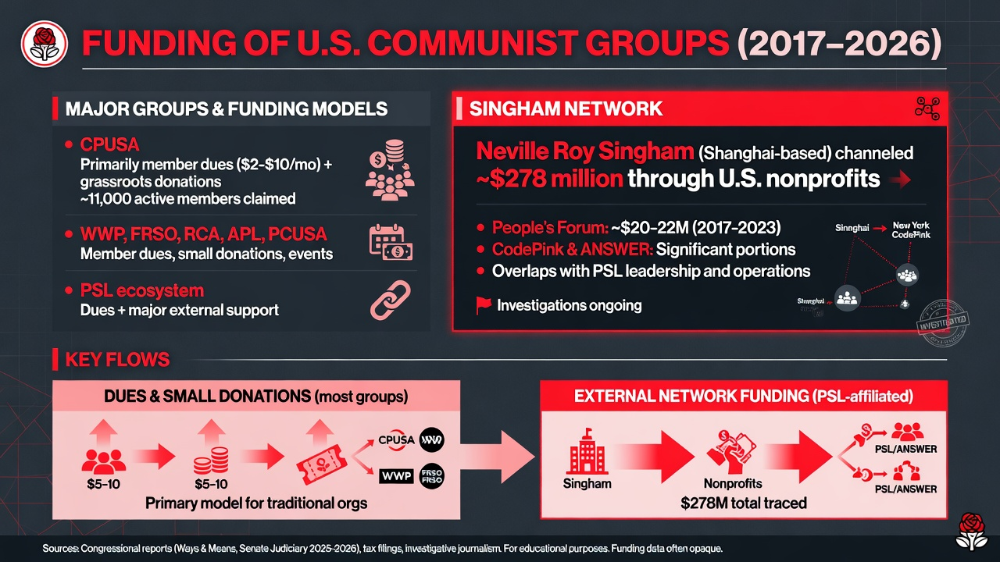

Most U.S. communist and Marxist-Leninist organizations are small and rely primarily on member dues and individual donations. Financial transparency is limited. One notable exception involves significant external funding through networks associated with Neville Roy Singham.

Funding overview of major U.S. communist organizations (2017–2026). Most rely on member dues and small donations. The PSL ecosystem receives substantial support through the Singham network. Data from public reports and investigations.
| Group | Social Media Presence | Primary Funding | Notable / External Funding | Notes |
|---|---|---|---|---|
| Communist Party USA (CPUSA) cpusa.org |
@communistsusa (X/Twitter) Instagram: @communistsusa Facebook, YouTube |
Member dues ($2–$10+/month; lower for low-income) Individual donations Fund drives (People's World) |
None publicly disclosed as major Claims "no grants or corporate sponsorship" |
Grassroots model. ~11,000 active members claimed (2026). Historical Soviet funding ended decades ago. |
| Party for Socialism and Liberation (PSL) pslweb.org |
@pslnational (X) Instagram: @pslnational (277k+ followers) Facebook, Liberation News |
Member dues + donations Events, publications, "Liberation Centers" |
Neville Roy Singham network (major) People's Forum: ~$20–22M (2017–2023) via donor-advised funds (e.g. Goldman Sachs Philanthropy); specific: $2.5M (2017), $4.4M (2018), $12.43M (2019+) CodePink (overlapping): ~$1.4M ANSWER Coalition & related: part of broader ~$278M Singham network |
PSL leadership heavily overlaps with People's Forum (e.g. Claudia De la Cruz). Infrastructure (events, offices, media) subsidized via Singham's Justice & Education Fund and shell entities. Ongoing congressional probes (2025–2026) into FARA compliance and CCP ties. Singham (Shanghai-based) has documented pro-CCP activities. |
| Workers World Party (WWP) workers.org |
workers.org + branch accounts (Facebook, Instagram) Linked to ANSWER Coalition channels |
Dues and small donations Publications and events Supporter program |
Indirect via ANSWER Coalition (receives support through Singham-linked entities) | Militant ML (Marcyite). Sponsors ANSWER Coalition protests and international solidarity work. Primary funding remains member-based. |
| Freedom Road Socialist Organization (FRSO) frso.org |
frso.org Local branches active on social media |
Member dues Small donations, events |
Primarily internal / grassroots | Focus on building a new communist party. Recent congresses report growth in movements. |
| Revolutionary Communists of America (RCA) communistusa.org |
communistusa.org Active on X, YouTube, socials |
"Sustainer" recurring donations One-time donations |
Grassroots / member-supported | Part of international Revolutionary Communist International. Emphasizes building for revolution. |
| American Party of Labor (APL) americanpartyoflabor.com |
Website and social channels | Dues and donations | Primarily internal | Anti-revisionist (Hoxhaist) ML. Member of international ML conference. |
| Party of Communists USA (PCUSA) | partyofcommunistsusa.net | Dues, donations | Primarily grassroots | Focus on transition to socialism/communism and international solidarity. |
CPUSA states: “The work of the Communist Party is funded solely by donations from grassroots supporters and allies... We receive no grants or corporate sponsorship.”
The PSL and affiliated organizations (People’s Forum, ANSWER Coalition) receive substantial support from tech billionaire Neville Roy Singham (former Thoughtworks chairman, now Shanghai-based).
Singham has publicly been called a “Marxist comrade” by the People’s Forum (2021 X post).
Mechanism: Funds routed through U.S. donor-advised funds (e.g. Goldman Sachs Philanthropy Fund, United Community Fund) and entities like Justice & Education Fund (JEF) and People’s Support Foundation to obscure direct transfers. Many recipient orgs use UPS store / mailbox addresses in filings.
Key Amounts & Timeline (public reports):
Overlaps with PSL: The People’s Forum serves as a hub. PSL staff/leadership run or co-direct funded projects. “Liberation Centers” and protest infrastructure benefit. ANSWER Coalition (WWP/PSL linked) organizes many actions with Singham-backed support.
Alleged Influence: Singham maintains close ties to Chinese state media in Shanghai. Groups have amplified pro-CCP narratives on Xinjiang, Taiwan, Hong Kong, and “no war on China” campaigns while criticizing U.S. policy.
Sources: Official committee letters, tax filings analyzed by reporters.
Groups maintain accounts for recruitment, propaganda, and mobilization. Follower counts are estimates from public profiles (as of recent data). PSL has notably strong digital reach.
Beyond the primary organizations above, several smaller Marxist-Leninist or communist formations exist, primarily funded through the same dues + donations model with very limited public financial data:
Note: A 2024 splinter called the American Communist Party (associated with Haz Al-Din and Jackson Hinkle) emerged with a populist/"MAGA Communism" orientation but is not a traditional Marxist-Leninist organization.